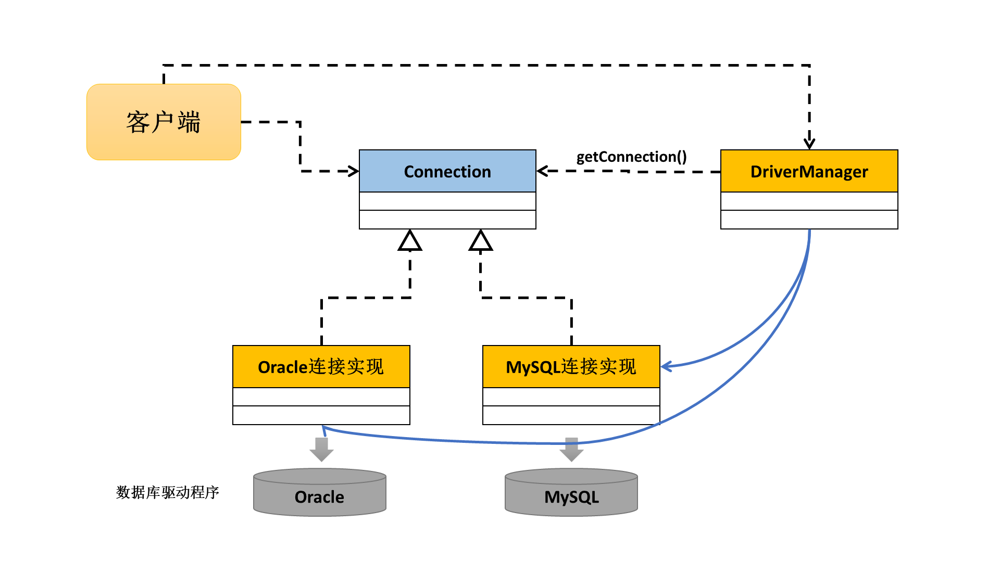

JDBC简介
在Java语言设计的时候除了考虑到平台的编程技术之外，为了方便用户的进行各种情况下的开发还提供有一系列的服务，而数据库的操作就属于Java的服务范畴。服务的最大特点：所有的操作部分几乎都是固定的流程，也就是说服务几乎没有技术含量，属于应用，而对于所有的应用，代码的流程是固定的。
JDBC（Java Database Connective），Java数据库连接技术，即：是由Java提供的一组与平台无关的数据库的操作标准（是一组接口的组成），由于数据库属于资源操作，所以所有的数据库操作的最后必须要关闭数据库连接。
在JDBC技术范畴里面实际上规定了四种Java数据库操作的形式：
- 形式一：JDBC-ODBC桥接技术（100%不用）
- 在Windows中有ODBC技术，ODBC指的是开放数据库连接，是由微软提供的数据库连接应用，而Java可以利用JDBC间接操作ODBC技术，从而实现数据库的链接；
- 流程：程序 → JDBC → ODBC → 数据库，性能是最差的，支持的版本是最新的；
- 形式二：JDBC直接连接
- 直接由不同的数据库生产商提供指定的数据库连接驱动程序（实现了Java的数据库操作标准的一群类），此类方式由于是JDBC直接访问数据库，所以性能是最好的。支持的JDBC版本不是最新的；
- 形式三：JDBC网络连接
- 使用专门的数据库的网络连接指令进行指定主机的数据库操作，此种方式使用最多；
- 形式四：模拟指定数据库的通讯协议自己编写数据库操作。
Java技术连接任何数据库性能都是很高的，除了SQL Server。
连接Oracle数据库
在Java之中，所有数据库操作的类和接口都保存在了java.sql包里面，在这个包里面核心的组成如下：
- 一个类：
DriverManger类； - 四个接口：
Connection、Statement、ResultSet、PreparedStatment。
所有的JDBC连接数据库的操作流程都是固定的，按照如下的几步完成：
- 加载数据库的驱动程序（向容器加载）；
- 进行数据库连接（通过
DriverManager类完成，Connection表示连接）； - 进行数据的CRUD（
Statment、PreparedStatment、ResultSet）； - 关闭数据库操作以及连接（直接关闭连接就够了）。
一、加载驱动程序
所有的JDBC实际上都是有各个不同的数据库生产商提供的数据库驱动程序，这些驱动程序都是以*.jar文件的形式给出来的，所以如果要使用就需要为其配置CLASSPATH，而后要设置驱动程序的类名称（包.类）；
- 驱动程序：
/app/Administrator/product/11.2.0/dbhome_1/jdbc/lib/ojdbc6.jar； - Oracle驱动程序类：
oracle.jdbc.driver.OracleDriver。 - 加载类使用
Class.forName("oracle.jdbc.driver.OracleDriver")；
二、连接数据库
如果想要连接数据库需要提供有如下的几个信息（前提：数据库服务要打开）：
- 数据库的链接地址：
jdbc:oracle:连接方式:@主机:端口:数据库SIDjdbc:oracle:thin:@localhost:1521:orcl；
- 数据库的用户名：
scott； - 数据库的密码：
tiger；
要连接数据库必须依靠DriverManager类完成，在此类定义有如下的方法：
- 连接数据库：
public static Connection getConnection(String url, String user, String password) throws SQLException；
在JDBC里面，每一个数据库连接都要求使用一个Connection对象进行封装，所以只要有一个新的Connection对象就表示要连接一次数据库。
四、关闭数据库
Connection接口提供有close()方法：public void close() throws SQLException；
范例： 连接数据库
public class TestDemo {
private static final String DBDRIVER = "oracle.jdbc.driver.OracleDriver";
private static final String DBURL = "jdbc:oracle:thin:@localhost:1521:orcl";
private static final String USER = "scott";
private static final String PASSWORD = "tiger";
public static void main(String[] args) throws Exception {
// 1.加载数据库驱动程序，此时不需要实例化，因为会由容器自己负责管理
Class.forName(DBDRIVER);
// 2.连接数据库
Connection conn = DriverManager.getConnection(DBURL, USER, PASSWORD);
System.out.println(conn);
// 4.关闭数据库
conn.close();
}
}
此时的程序已经可以正常的了解Oracle数据库，可是很多时候是连接不上Oracle数据库的。
1. 监听服务出现错误
- 监听的主机名称不是本机的计算机名称，也不要使用IP地址；
- 监听配置文件路径：
/app/Administrator/product/11.2.0/dbhome_1/NETWORK/ADMIN，路径下面有两个文件：- 监听文件：
listener.ora； - 监听名文件：
tnsnames.ora；
- 监听文件：
2. 不能找到指定的SID
数据库的名字就是SID的名字，但是很多时候会发现该名称不会自动注册，也就是说只有数据库名称，但是没有对应的SID名称。可以打开数据库的网络管理工具（开始 → Net Manager）。
通过以上的操作可以发现，整个数据库进行连接操作的时候都是按照同样的步骤进行的：
DriverManager类取得Connection接口对象。

可以看出JDBC操作中，在驱动数据库连接对象是，采用的是工厂设计模式，而DriverManager就是一个工厂类，客户端调用的时候回完全隐藏具体的实现类。